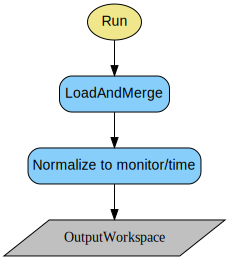
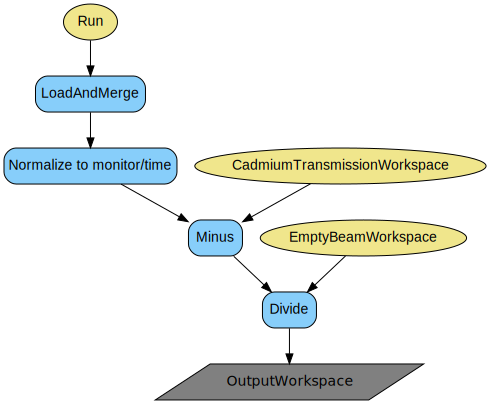
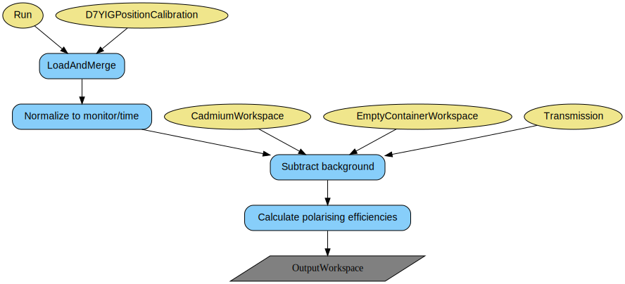
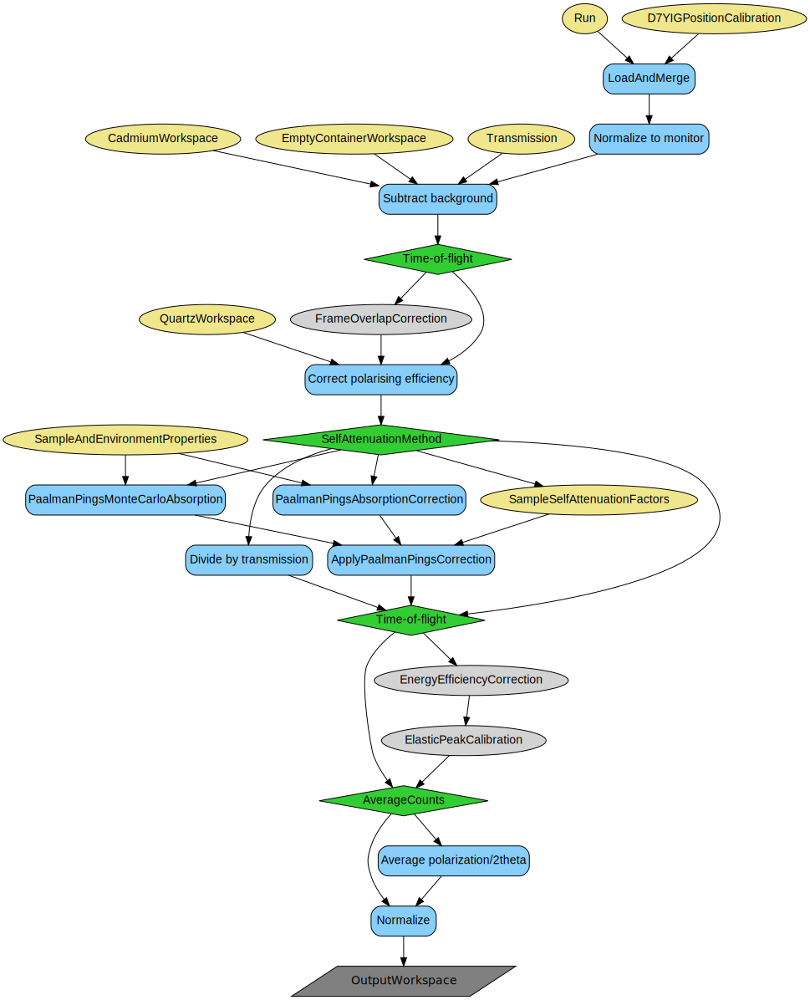
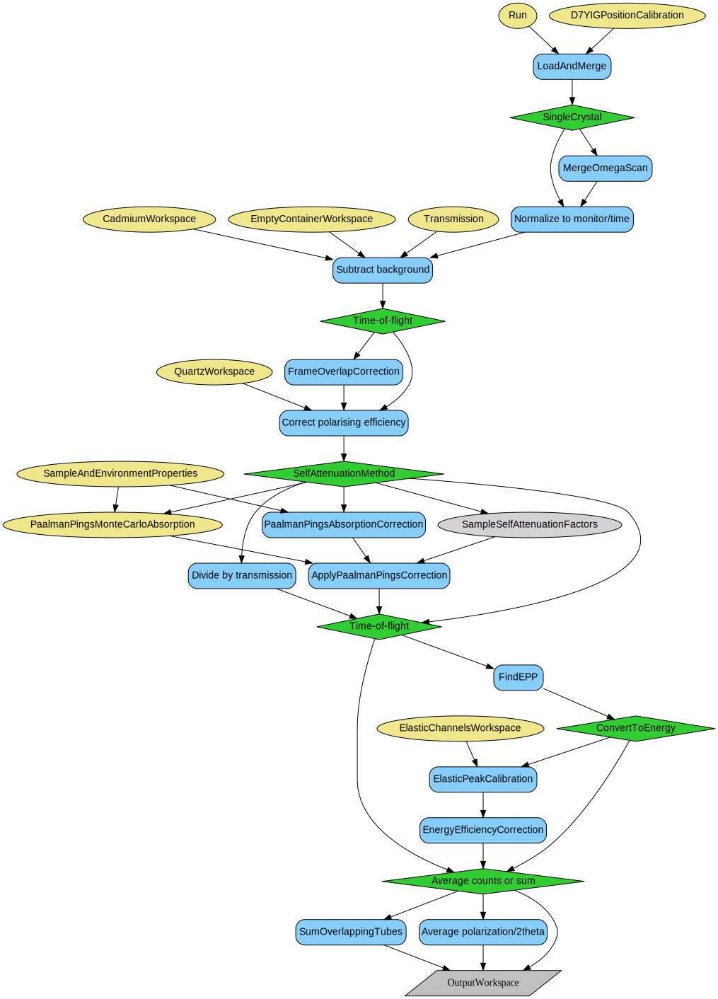
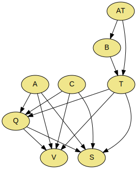

\(\renewcommand\AA{\unicode{x212B}}\)
PolDiffILLReduction v1¶

PolDiffILLReduction dialog.¶
Summary¶
Performs polarized diffraction and spectroscopy data reduction for the D7 instrument at the ILL.
See Also¶
Properties¶
Name |
Direction |
Type |
Default |
Description |
|---|---|---|---|---|
Run |
Input |
list of str lists |
Mandatory |
File path of run(s). Allowed values: [‘nxs’] |
ProcessAs |
Input |
string |
Sample |
Choose the process type. Allowed values: [‘Cadmium’, ‘EmptyBeam’, ‘BeamWithCadmium’, ‘Transmission’, ‘Empty’, ‘Quartz’, ‘Vanadium’, ‘Sample’] |
OutputWorkspace |
Output |
WorkspaceGroup |
Mandatory |
The output workspace based on the value of ProcessAs. |
CadmiumWorkspace |
Input |
WorkspaceGroup |
The name of the cadmium workspace group. |
|
EmptyBeamWorkspace |
Input |
WorkspaceGroup |
The name of the empty beam input workspace. |
|
CadmiumTransmissionWorkspace |
Input |
WorkspaceGroup |
The name of the cadmium transmission input workspace. |
|
Transmission |
Input |
string |
The name of the transmission input workspace or a string with desired transmission value. |
|
EmptyContainerWorkspace |
Input |
WorkspaceGroup |
The name of the empty (container) workspace. |
|
QuartzWorkspace |
Input |
WorkspaceGroup |
The name of the polarisation efficiency correction workspace. |
|
OutputTreatment |
Input |
string |
Individual |
Which treatment of the provided scan should be used to create output. Allowed values: [‘Individual’, ‘IndividualXY’, ‘AveragePol’, ‘AverageTwoTheta’, ‘Sum’] |
ClearCache |
Input |
boolean |
True |
Whether or not to clear the cache of intermediate workspaces. |
AbsoluteNormalisation |
Input |
boolean |
True |
Whether or not to perform normalisation to absolute units. |
SelfAttenuationMethod |
Input |
string |
None |
Which approach to calculate (or not) the self-attenuation correction factors to be used. Allowed values: [‘None’, ‘Transmission’, ‘Numerical’, ‘MonteCarlo’, ‘User’] |
SampleGeometry |
Input |
string |
None |
Sample geometry for self-attenuation correction to be applied. Allowed values: [‘None’, ‘FlatPlate’, ‘Cylinder’, ‘Annulus’, ‘Custom’] |
SampleAndEnvironmentProperties |
Input |
Dictionary |
null |
Dictionary for the information about sample and its environment. |
SampleSelfAttenuationFactors |
Input |
WorkspaceGroup |
The name of the workspace group containing self-attenuation factors of the sample. |
|
ScatteringAngleBinSize |
Input |
number |
0.5 |
Scattering angle bin size in degrees used for expressing scan data on a single TwoTheta axis. |
MeasurementTechnique |
Input |
string |
Powder |
What type of measurement technique has been used to collect the data. Allowed values: [‘Powder’, ‘SingleCrystal’, ‘TOF’] |
InstrumentCalibration |
Input |
string |
The path to the calibrated Instrument Parameter File. Allowed extensions: [‘.xml’] |
|
NormaliseBy |
Input |
string |
Monitor |
What normalisation approach to use on data. Allowed values: [‘Monitor’, ‘Time’, ‘None’] |
ElasticChannelsWorkspace |
Input |
The name of the table workspace containing elastic peak positions. |
||
EnergyBinning |
Input |
dbl list |
Manual energy exchange binning parameters. |
|
FrameOverlapCorrection |
Input |
boolean |
True |
Whether or not to perform frame overlap correction for TOF data. |
ConvertToEnergy |
Input |
boolean |
True |
Whether to convert TOF axis into energy exchange or keep it in units of time. |
DetectorEnergyEfficiencyCorrection |
Input |
boolean |
True |
Whether or not to perform detector energy efficiency correction for TOF data. |
MaskDetectors |
Input |
long list |
Which detectors should be masked. |
|
MaxTOFChannel |
Input |
number |
512 |
What is the maximal number of TOF bins to be used.Bins above this value will be removed. |
SubtractTOFBackgroundMethod |
Input |
string |
Gaussian |
Which approach to use when subtracting time-(in)dependent background. Gaussian is equivalent to LAMP implementation, subtracts a Gaussian distribution preserving counts of the background source. Rectangular averages the container counts over the EP region. Data uses container counts directly as measured. Allowed values: [‘Gaussian’, ‘Rectangular’, ‘Data’] |
PerformAnalyserTrCorrection |
Input |
boolean |
True |
Whether to perform analyser transmission correction. |
DebugMode |
Input |
boolean |
False |
Whether to create and show all intermediate workspaces at each correction step. |
Description¶
This algorithm performs polarised diffraction and spectroscopy reduction for the D7 instrument at the ILL. With each call, this algorithm processes one type of data which is a part of the whole experiment. The logic is resolved by the property ProcessAs, which governs the reduction steps based on the requested type. It can be one of the 8: cadmium, empty beam, beam-with-cadmium, transmission, empty, quartz, vanadium, and sample. The full data treatment of the complete experiment should be build up as a chain with multiple calls of this algorithm over various types of acquisitions. The sequence should be logical, typically as enumerated above, since the later processes need the outputs of earlier processes as input. The common mandatory input is a run file (numor), or a list of them. In case a list is provided, coming for example from a scan over twoTheta angle, the data is treated individually up to the point of background subtraction, and then can be either left as a list, each detector can averaged over the scan, or all data from the scan can summed.
The input data is renamed, and a suffix is added to each numor containing information about the polarisation direction (‘Z’, ‘X’, ‘Y’, etc.) and the flipper state (‘ON’, ‘OFF’).
Most of the corrections, such as background subtraction or polarisation correction, are optional and their inclusion depends on the provided inputs and set flags. However, it is mandatory to provide basic information about the vanadium and sample, such as mass, chemical formula, and either density or number density.
The common mandatory output is a workspace, but up to which step it is processed, depends on ProcessAs.
ProcessAs¶
Different input properties can be specified depending on the value of ProcessAs, as summarized in the table:
ProcessAs |
Input Workspace Properties |
Other Input Properties |
|---|---|---|
BeamWithCadmium |
|
|
EmptyBeam |
|
|
Transmission |
|
|
Cadmium |
|
|
Empty |
|
|
Quartz |
|
|
Vanadium |
|
|
Sample |
|
|
All the input workspace properties above are optional, unless bolded. For example, if processing as sample, if a empty container and cadmium absorber inputs are specified, subtraction will be performed, if not, the step will be skipped. The rare exceptions are when processing as transmission, when beam input workspace is mandatory, and to calculate polarising efficiencies, where input from transmission is indispensable. Transmission however can be provided also as a string containing floating point value of desired tranmission, that needs to be in the range (0, 1].
NormaliseBy¶
This property allows to choose how the data is going to be normalised. The choices are: Monitor (Monitor 1) and Time (experiment duration saved in the NeXus file).
MeasurementTechnique¶
This property allows to distinguish between reducing powder data from single crystal measurement. The options are: Powder, SingleCrystal, and TOF. In the case of single crystal data, only one bank position can be processed at a time, and all input files for that bank are concatenated into a single workspace with vertical axis being 2theta positions of detectors, and the horizontal axis containing omega scan steps.
In the TOF case, the X-axis is binned according to uncalibrated time, with binning information (start of the range, time bin width, number of bins) coming from NeXus files. Setting the MeasurementTechnique property to TOF enables also elastic peak calibration of data, with peak information coming from FindEPP which is run on vanadium data during reducing data as Vanadium. The output of Vanadium reduction containing information with fitted elastic peak positions provided through ElasticChannelsWorkspace property, or a mock TableWorkspace containing at least two columns: PeakCentre and Sigmas, or an EPCentre (optionally also EPWidth) key defined via SampleAndEnvironmentProperties property, is required when the processAs is set to Sample and MeasurementTechnique is set to TOF. The output workspace processed in this mode will have its X-axis units set to calibrated energy exchange (DeltaE), where the energy exchange equal to 0 is set to fall at the position of the elastic peak for each detector.
SubtractTOFBackgroundMethod¶
This property is relevant only when MeasurementTechnique is TOF. The property introduces three options for subtracting the background from the sample in the time-of-flight mode. In all cases, the background is coming from either a measurement of the empty container or vanadium sample, if container measurement is not possible. The background is split in two contributions, time-independent and time-dependent, respectively. The time-independent contribution is calculated as an average of counts outside of the elastic peak region. The time-dependent contribution is the background present in the elastic peak region. Different options of the SubtractTOFBackgroundMethod allow the user to choose how the time-dependent background estimate is going to be subtracted from the current sample (vanadium, sample) data. The full mathematical description is placed in the technique document for the Polarised Diffraction at D7.
When SubtractTOFBackgroundMethod is equal to Data, the counts coming from empty container or vanadium measurement are used without modification and directly subtracted from current sample counts. When this property is set to Rectangular, an average of the measured background source counts is used instead of direct counts. This allows to smooth our fluctuations in the background source data, which in principle may be quite noisy. The last option is Gaussian, which estimates the background source counts as a gaussian distribution, with a centre at the elastic peak, the width of the elastic peak, and the integrated counts equal to that of the background source.
Detector and analyser energy correction¶
The detector and analyser energy corrections are performed only when the ConvertToEnergy property is checked.
The detector energy correction is performed using DetectorEfficiencyCorUser algorithm, with the following function:
where the constant value of -13.153 is derived from multiplying the pressure of detector tubes (10 Pa), their diameter (2.54 cm), and a factor of −0.51784, obtained by D7 responsible scientists using Monte Carlo simulations.
The analyser energy correction is a multiplicative correction, applied after the detector efficiency is taken into account, if the PerformAnalyserTrCorrection property is checked. The correction factor is a ratio of the analyser transmission for the elastic energy and the final energy corresponding to each bin (after conversion from time channels to energy exchange). The distribution of analyser transmission values as a function of wavelength (or, equivalently, energy) are coming from Monte Carlo simulations performed by D7 scientists, and are shown in Fig. 9 of Ref. [1].
OutputTreatment¶
This property of the algorithm allows to decide the treatment and shape of the output of the reduction workflow. There are several options available:
Individual
IndividualXY
AveragePol
AverageTwoTheta
Sum.
The Individual setting will preserve the number of workspaces of the input, allowing to check workspace by workspace how the relevant process reduced the data. This is the recommended setting for the sample data processing for the use as input to D7AbsoluteCrossSections algorithm.
IndividualXY allows to display all measured point on a single plot as a function of a twotheta. This option is indended as a convenient diagnostics, and the output obtained with this selection is not a suitable input for further processing in D7AbsoluteCrossSections.
AveragePol will average the workspaces according to their polarization orientation and the flipper state. The output will contain as many workspaces as there are relevant combinations of the polarization and the flipper state, so two workspaces in the case of the uniaxial measurement, six for XYZ, etc. This is the recommended setting for processing Quartz.
AverageTwoTheta will average the workspaces with the same 2theta.requested metadata entry. The output will contain as many workspaces as there were different requested twotheta positions. This setting is intended only as a convenient diagnostics of the reduction processing, and the output is not suitable for further processing.
Sum behaviour depends on the process. For processing Vanadium, it will first average input workspaces according to their polarisation orientation, like in AveragePol, and then the averaged workspaced will be summed. For different processes, this selection calls SumOverlappingTubes algorithm and will display data as a function of twotheta. This is the recommended setting for processing Vanadium; for other process types, the output is not suitable for further processing.
SampleAndEnvironmentProperties¶
This property is a dictionary containing all of the information about the sample and its environment. This information is used in self-attenuation calculations and in normalisation.
The complete list of keys can is summarised below:
Sample-only keys:
SampleMass
FormulaUnitMass
SampleChemicalFormula
SampleDensity
Height
The SampleMass needs to be defined, as well as the FormulaUnitMass, even when the self-attenuation is not taken into account. The other parameters are required when the self-attenuation coefficients are calculated.
Container-only keys:
ContainerChemicalFormula
ContainerDensity
Beam-only keys:
BeamHeight
BeamWidth
These do not have to be defined, and by default will be set to be larger than the sample size.
Then, depending on the chosen sample geometry, additional parameters need to be defined:
For FlatPlate:
SampleThickness
SampleWidth
SampleCenter
SampleAngle
ContainerFrontThickness
ContainerBackThickness
For Cylinder:
SampleRadius
ContainerRadius
For Annulus:
SampleInnerRadius
SampleOuterRadius
ContainerInnerRadius
ContainerOuterRadius
Time-of-flight specific keys:
EPCentre
EPWidth
EPNSigmasBckg
EPNSigmasVana
The EPCentre and EPWidth keys are the user-defined centre and width, respectively, of elastic peaks to be used for integrating elastic peaks, in units of time-of-flight. If any of those keys is provided along with the ElasticChannelWorkspace, it will be used instead of information provided in that table.
EPNSigmasBckg and EPNSigmasVana control the integration range around the position of elastic peak for each detector by expanding the width of the peak by the provided factor, used for calculations of the time-dependent background and the vanadium normalisation, respectively.
Optional general-use keys:
InitialEnergy - if not provided, the value will be calculated from the wavelength in the SampleLogs
NMoles - if not provided, the value will be calculated based on the SampleMass and FormulaUnitMass
Workflows¶
In the flowcharts below the yellow ovals represent the inputs, the grey parallelograms are the outputs for each process type.
Absorber transmission¶
Beam¶

Transmission¶
Container/Absorber¶
Quartz¶
Reference¶
Sample¶
Full Treatment¶
Full treatment is built by stacking up unary reductions with corresponding ProcessAs. The diagram below illustrates the flow of processing. Letters denote beam with absorber (AT), beam (B), transmission (T), cadmium (A), empty (C), quartz (Q), vanadium (V), sample (S). AT is processed first, and passed to all the other processes. B takes only AT as optional input, and the output of B is needed by all transmisison calculations. T takes AT and B as inputs, and the calculated transmission is used by Q, V, and S respectively. C and A are supplied to Q, V, and S respectively. Q takes A, C, its T, and the output is provided to V and S. V takes A, C, its T, and Q as inputs and the output can used to normalise S S takes A, C, its T, as well as Q as inputs. The output of S is reduced sample in desired units.
This example below performs a complete reduction for D7 data.
Note
For transmission calculation, the beam run and the transmission run have to be recorded at the same instrument configuration. For container subtraction, the container and the sample run have to be recorded at the same configuration.
Note
To run these usage examples please first download the usage data, and add these to your path. In Mantid this is done using Manage User Directories.
Example - full treatment of a powder sample
vanadium_dictionary = {'SampleMass':8.54,'SampleDensity':0.2,'FormulaUnitMass':50.94}
sample_dictionary = {'SampleMass':2.932,'SampleDensity':0.1,'FormulaUnitMass':182.56}
# Beam with cadmium absorber, used for transmission
PolDiffILLReduction(
Run='396991',
OutputWorkspace='cadmium_transmission_ws',
ProcessAs='BeamWithCadmium'
)
# Beam measurement for transmisison
PolDiffILLReduction(
Run='396983',
OutputWorkspace='beam_ws',
CadmiumTransmissionWorkspace='cadmium_transmission_ws',
ProcessAs='EmptyBeam'
)
print('Cadmium absorber monitor 2 rate as a ratio of empty beam is {0:.3f}'.format(mtd['cadmium_transmission_ws_1'].readY(0)[0] / mtd['beam_ws_1'].readY(0)[0]))
# Quartz transmission
PolDiffILLReduction(
Run='396985',
OutputWorkspace='quartz_transmission',
CadmiumTransmissionWorkspace='cadmium_transmission_ws',
EmptyBeamWorkspace='beam_ws',
ProcessAs='Transmission'
)
print('Quartz transmission is {0:.3f}'.format(mtd['quartz_transmission_1'].readY(0)[0]))
# Empty container
PolDiffILLReduction(
Run='396917',
OutputWorkspace='empty_ws',
ProcessAs='Empty'
)
# Cadmium absorber
PolDiffILLReduction(
Run='396928',
OutputWorkspace='cadmium_ws',
ProcessAs='Cadmium'
)
# Polarisation correction
PolDiffILLReduction(
Run='396939',
OutputWorkspace='pol_corrections',
CadmiumWorkspace='cadmium_ws',
EmptyContainerWorkspace='empty_ws',
# Transmission='0.95', # transmission can be also provided as a string with desired value
Transmission='quartz_transmission',
OutputTreatment='AveragePol',
ProcessAs='Quartz'
)
# Vanadium transmission
PolDiffILLReduction(
Run='396990',
OutputWorkspace='vanadium_transmission',
CadmiumTransmissionWorkspace='cadmium_transmission_ws',
EmptyBeamWorkspace='beam_ws',
ProcessAs='Transmission'
)
print('Vanadium transmission is {0:.3f}'.format(mtd['vanadium_transmission_1'].readY(0)[0]))
# Vanadium reduction
PolDiffILLReduction(
Run='396993',
OutputWorkspace='vanadium_ws',
CadmiumWorkspace='cadmium_ws',
EmptyContainerWorkspace='empty_ws',
Transmission='vanadium_transmission',
QuartzWorkspace='pol_corrections',
OutputTreatment='Sum',
SampleGeometry='None',
SampleAndEnvironmentProperties=vanadium_dictionary,
ProcessAs='Vanadium'
)
# Sample transmission
PolDiffILLReduction(
Run='396986',
OutputWorkspace='sample_transmission',
CadmiumTransmissionWorkspace='cadmium_transmission_ws',
EmptyBeamWorkspace='beam_ws',
ProcessAs='Transmission'
)
print('Sample transmission is {0:.3f}'.format(mtd['sample_transmission_1'].readY(0)[0]))
# Sample reduction
PolDiffILLReduction(
Run='397004',
OutputWorkspace='sample_ws',
CadmiumWorkspace='cadmium_ws',
EmptyContainerWorkspace='empty_ws',
Transmission='sample_transmission',
QuartzWorkspace='pol_corrections',
OutputTreatment='Individual',
SampleGeometry='None',
SampleAndEnvironmentProperties=sample_dictionary,
ProcessAs='Sample'
)
Output:
Cadmium absorber monitor 2 rate as a ratio of empty beam is 0.011
Quartz transmission is 0.700
Vanadium transmission is 0.886
Sample transmission is 0.963
Example - full treatment of a single crystal sample
vanadium_mass = 8.535
sample_formula_mass = 137.33 * 2.0 + 54.93 + 127.6 + 15.999 * 6.0
sample_mass = 7.83
vanadium_dictionary = {'SampleMass': vanadium_mass, 'FormulaUnits': 1, 'FormulaUnitMass': 50.942}
sample_dictionary = {'SampleMass': sample_mass, 'FormulaUnits': 1, 'FormulaUnitMass': sample_formula_mass,
'KiXAngle': 45.0, 'OmegaShift': 52.5}
calibration_file = "D7_YIG_calibration.xml"
# Empty container for quartz and vanadium
PolDiffILLReduction(
Run='450747:450748',
OutputWorkspace='container_ws',
ProcessAs='Empty'
)
# Empty container for bank position 1 (bt1), tth=79.5
PolDiffILLReduction(
Run='397406:397407',
OutputTreatment='AveragePol',
OutputWorkspace='container_bt1_ws',
ProcessAs='Empty'
)
# empty container for bt2, tth=75
PolDiffILLReduction(
Run='397397:397398',
OutputTreatment='AveragePol',
OutputWorkspace='container_bt2_ws',
ProcessAs='Empty'
)
PolDiffILLReduction(
Run='450769:450770',
OutputWorkspace='pol_corrections',
EmptyContainerWorkspace='container_ws',
Transmission='0.9',
OutputTreatment='AveragePol',
ProcessAs='Quartz'
)
PolDiffILLReduction(
Run='450835:450836',
OutputWorkspace='vanadium_ws',
EmptyContainerWorkspace='container_ws',
Transmission='0.89',
QuartzWorkspace='pol_corrections',
OutputTreatment='Sum',
SampleGeometry='None',
SelfAttenuationMethod='Transmission',
SampleAndEnvironmentProperties=vanadium_dictionary,
AbsoluteNormalisation=True,
InstrumentCalibration=calibration_file,
ProcessAs='Vanadium'
)
# bank position 1, tth=79.5
PolDiffILLReduction(
Run='399451:399452',
OutputWorkspace='bt1',
EmptyContainerWorkspace='container_bt1_ws',
Transmission='0.95',
QuartzWorkspace='pol_corrections',
OutputTreatment='Individual',
SampleGeometry='None',
SampleAndEnvironmentProperties=sample_dictionary,
MeasurementTechnique='SingleCrystal',
InstrumentCalibration=calibration_file,
ProcessAs='Sample'
)
# bank position 2, tth=75
PolDiffILLReduction(
Run='400287:400288',
OutputWorkspace='bt2',
EmptyContainerWorkspace='container_bt2_ws',
Transmission='0.95',
QuartzWorkspace='pol_corrections',
OutputTreatment='Individual',
SampleGeometry='None',
SampleAndEnvironmentProperties=sample_dictionary,
MeasurementTechnique='SingleCrystal',
InstrumentCalibration=calibration_file,
ProcessAs='Sample'
)
appended_ws = 'appended_ws'
AppendSpectra(InputWorkspace1='bt1', InputWorkspace2='bt2',
OutputWorkspace=appended_ws)
# names need to be re-set, AppendSpectra just concatenates them
possible_polarisations = ['ZPO_ON', 'ZPO_OFF', 'XPO_ON', 'XPO_OFF', 'YPO_ON', 'YPO_OFF']
polarisation = ""
for entry in mtd[appended_ws]:
entry_name = entry.name()
for polarisation in possible_polarisations:
if polarisation in entry_name:
break
RenameWorkspace(InputWorkspace=entry, OutputWorkspace="{}_{}".format(appended_ws, polarisation))
Example - full treatment of a water sample measured in Time-of-flight mode
# based on logbook from exp_6-02-594, cycle 193
vanadium_mass = 6.11 * 4.0 * np.pi * (0.6**2 - 0.4**2)
formula_weight_H2O = 1.008 * 2 + 15.999 # NIST
sample_mass_H2O = 0.874
sample_formula_H2O = 'H2O'
sample_thickness_H2O = 1.95
max_tof_channel = 511
vanadium_dictionary = {'SampleMass':vanadium_mass, 'FormulaUnitMass':50.942, 'EPCentre':1645.0, 'EPWidth':54.0, 'EPNSigmasBckg':3.0, 'EPNSigmasVana': 3.0}
sample_dictionary_H2O = {'SampleMass':sample_mass_H2O, 'FormulaUnitMass':formula_weight_H2O, 'SampleChemicalFormula':sample_formula_H2O}
yig_calibration_file = "D7_YIG_calibration_TOF.xml"
# Beam measurement for transmission
PolDiffILLReduction(
Run='395557',
OutputWorkspace='beam_ws',
ProcessAs='EmptyBeam'
)
# empty container
PolDiffILLReduction(
Run='396036:396155',
OutputTreatment='AveragePol',
OutputWorkspace='container_ws',
ProcessAs='Empty'
)
# Vanadium transmission
PolDiffILLReduction(
Run='395564',
OutputWorkspace='vanadium_tr',
EmptyBeamWorkspace='beam_ws',
ProcessAs='Transmission'
)
# Vanadium reduction
PolDiffILLReduction(
Run='396016:396034',
OutputWorkspace='vanadium_ws',
EmptyContainerWorkspace='container_ws',
Transmission='vanadium_tr',
OutputTreatment='Sum',
SelfAttenuationMethod='None',
SampleGeometry='None',
AbsoluteNormalisation=False,
SampleAndEnvironmentProperties=vanadium_dictionary,
MeasurementTechnique='TOF',
ProcessAs='Vanadium',
InstrumentCalibration=yig_calibration_file,
FrameOverlapCorrection=True,
DetectorEnergyEfficiencyCorrection=True,
ConvertToEnergy=True,
ClearCache=True
)
# H2O transmission
PolDiffILLReduction(
Run='395560,395561', # 0 and 90 degrees
OutputWorkspace='h2O_1cm_tr',
EmptyBeamWorkspace='beam_ws',
ProcessAs='Transmission'
)
# Sample reduction
# water reduction
PolDiffILLReduction(
Run="395639:395798",
OutputWorkspace='h2O_ws',
EmptyContainerWorkspace='container_ws',
Transmission='h2O_1cm_tr',
OutputTreatment='AveragePol',
SampleGeometry='None',
SampleAndEnvironmentProperties=sample_dictionary_H2O,
MeasurementTechnique='TOF',
InstrumentCalibration=yig_calibration_file,
ElasticChannelsWorkspace='vanadium_ws_elastic',
ProcessAs='Sample',
FrameOverlapCorrection=True,
DetectorEnergyEfficiencyCorrection=True,
ConvertToEnergy=True
ClearCache=True
)
References¶
Categories: AlgorithmIndex | ILL\Diffraction
Source¶
Python: PolDiffILLReduction.py